Learning Record 10
Mind the Gap to Trustworthy LLM Agents: A Systematic Evaluation on Constraint Satisfaction for Real-World Travel Planning
Mind the Gap to Trustworthy LLM Agents: A Systematic Evaluation on Constraint Satisfaction for Real-World Travel Planning
今天读了一篇很好的综述论文，讲的是基于大模型的旅行规划，契机是我在为我的人工智能导论大作业选题，先看了一下一个bench—TravelPlanner的演示视频，关于这个主题有一些自己的看法，同时这个选题还附有一篇论文，刚开始我还觉得是老师它们做的方法，看到后面才发现是一篇综述文章，这其实也是我第一次读这种类型的文章，感觉体验非常好。整个文章讲得很清楚，可读性很高，对于我了解这个领域确实是起到了很好的引导作用。但是其实我现在还是不懂怎么做我的大作业，如果是要做出一篇论文，我感觉这任务量太大了。
看的时间大概是上午11点左右到下午3点左右，可能也就看了三个小时左右，因为还睡了一下午觉。
先来总结一下今天看的这篇文章，
开头的一个总览
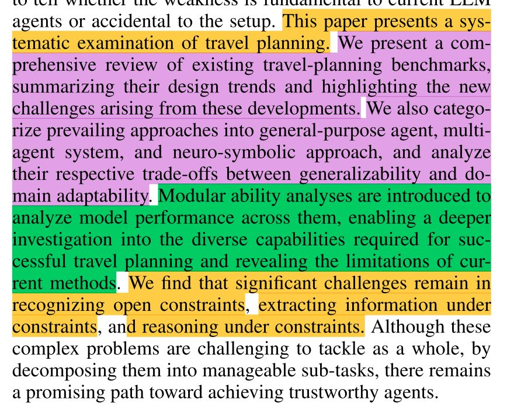
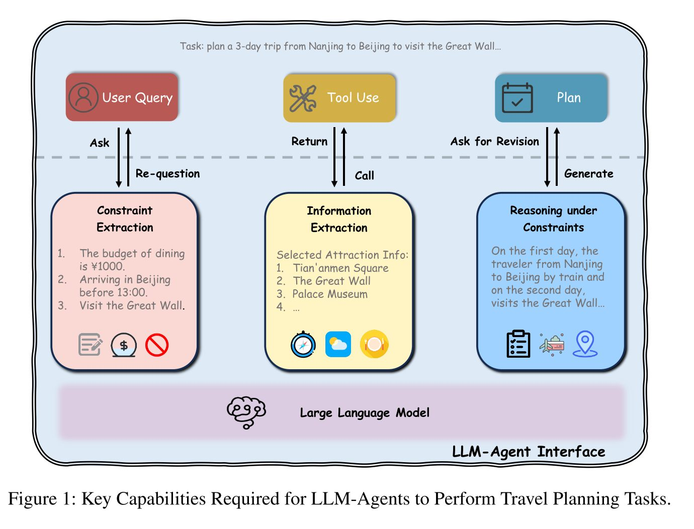
过一遍这篇论文
1.Related Work:
讲了三个关键领域
LLM-Agents ,
Real-World LLM Planning Tasks ,
Neuro-Symbolic AI
2.Benchmarks
From a constraint-satisfaction
perspective on whether LLM agents meet user needs
（主要从三个方面分析）
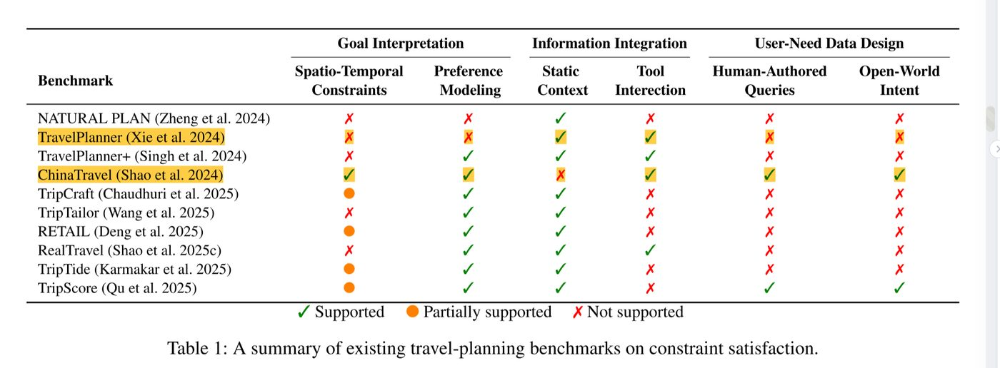
3.Method
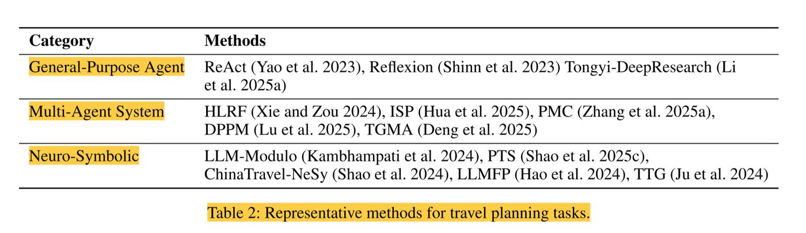
主要分析三种方法
General-Purpose Agent:
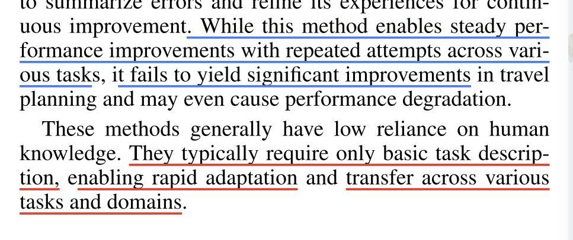
Multi-Agent System:
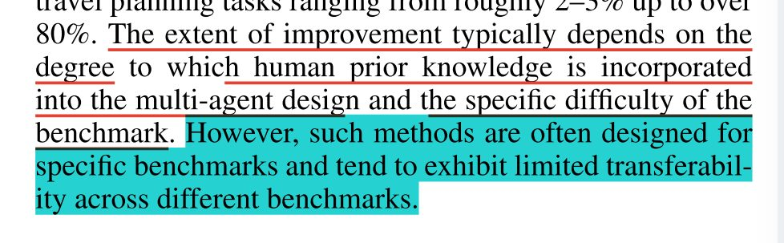
Neuro-Symbolic Approach:
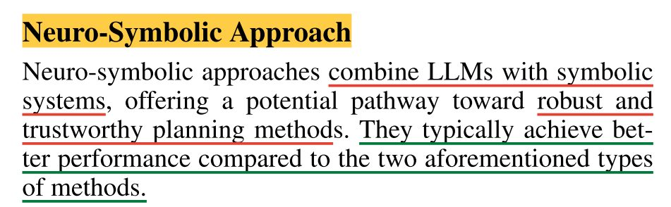
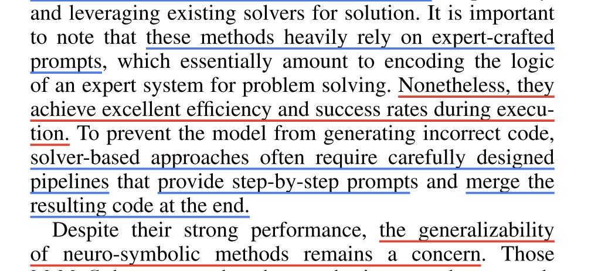
4.Experiments and Results
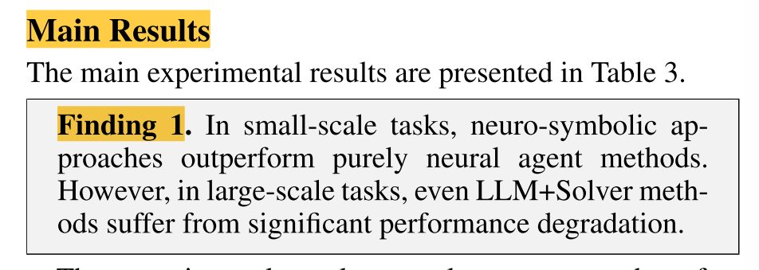
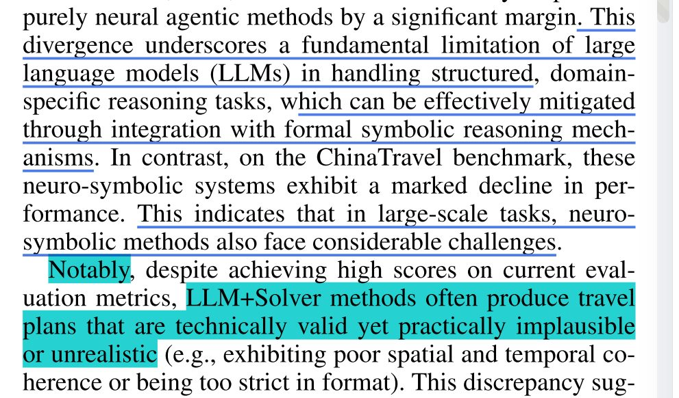
上面蓝色部分表明了当前benchmark的不足，缺乏时空限制，不能很好地测试现实世界的可用性
此外，作者在评估方法中还提到
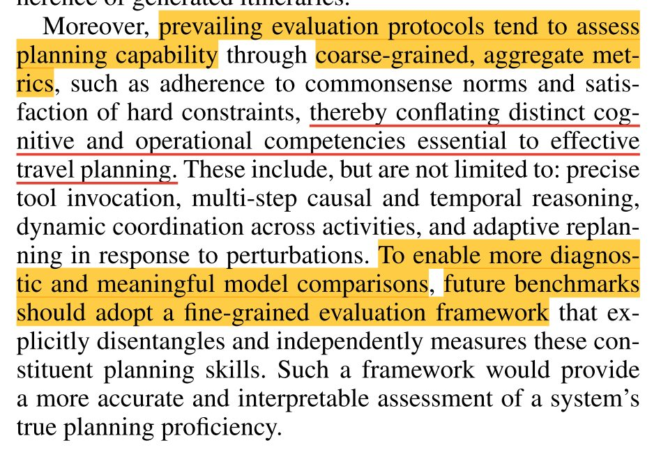
核心意思
现在的评估方法，只会看最终行程是不是“合理”（比如符合常识、满足硬性要求）。但作者认为，行程好不代表模型真的会规划，因为做好一个行程需要很多种不同的能力，比如会调用工具、能做多步推理、能协调不同活动、能应对突发变化等等。
结论： 将来的评估应该把这些能力拆开，一个一个单独测，这样才能真正看出模型哪儿行哪儿不行，而不是只看最终结果好不好。
（其实这种思想可以迁移到更多约束任务的情形，旅行规划只是一个很典型的任务）
———————————————————————————————————————-
作者还设计了更仔细的分析实验
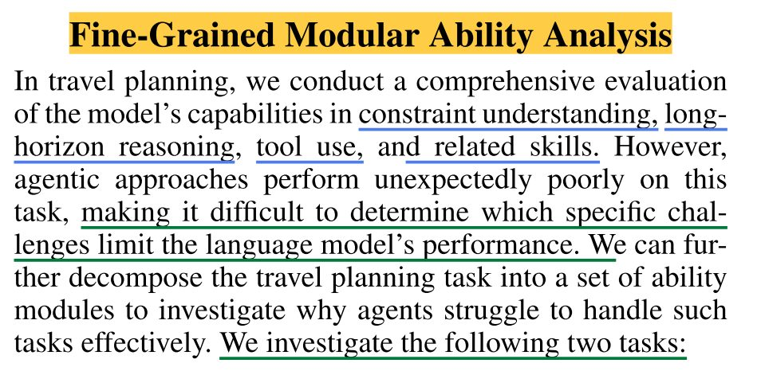
主要分析
Constraint Extraction
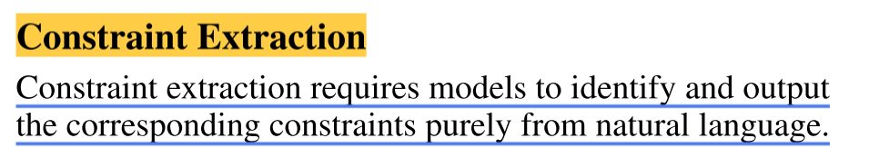
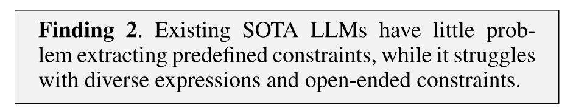
Constraint-based Information Extraction
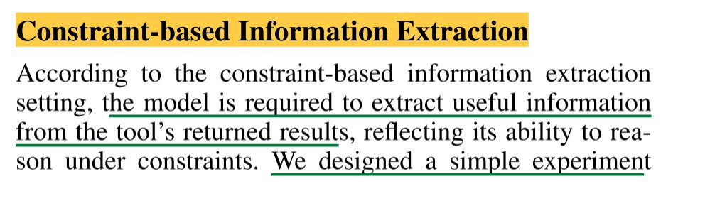
Eg:
Specifically, for each query that includes a room type
or house rule, we retrieve accommodations from all possible
cities related to the query’s destination, and ask the model
to select those that meet both requirements.
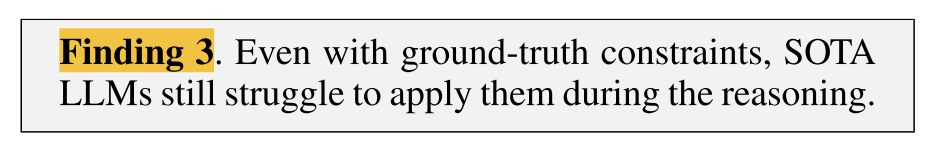
此外，还的得到了其他结论
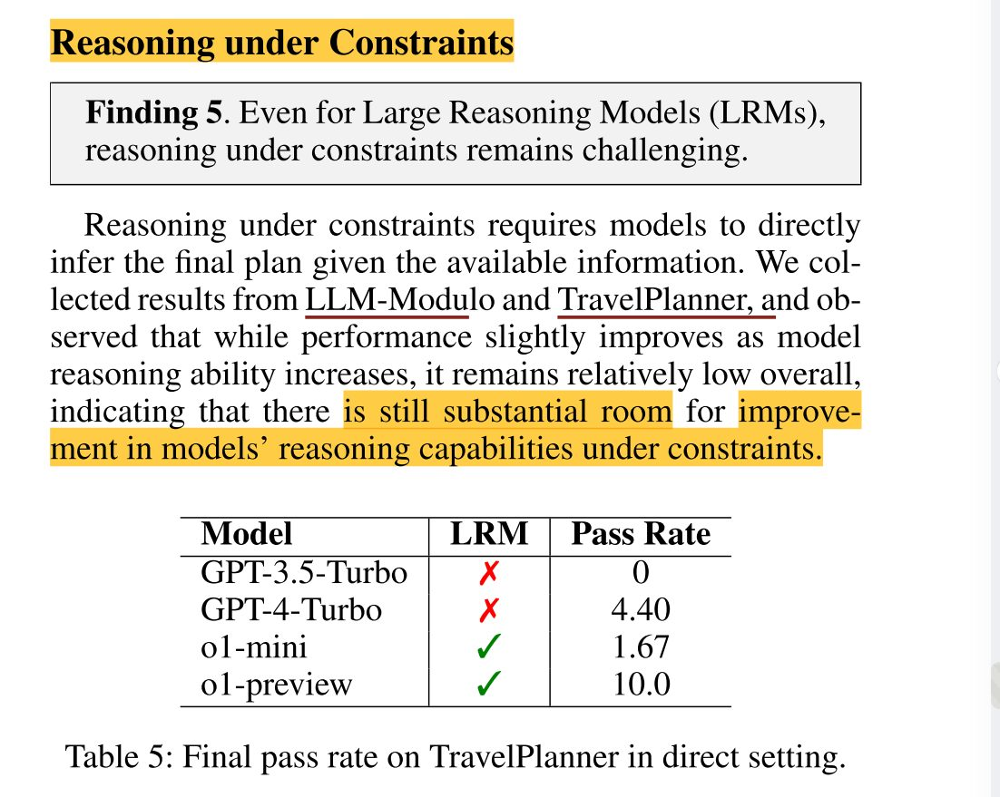
—————————————————————————————————
结论
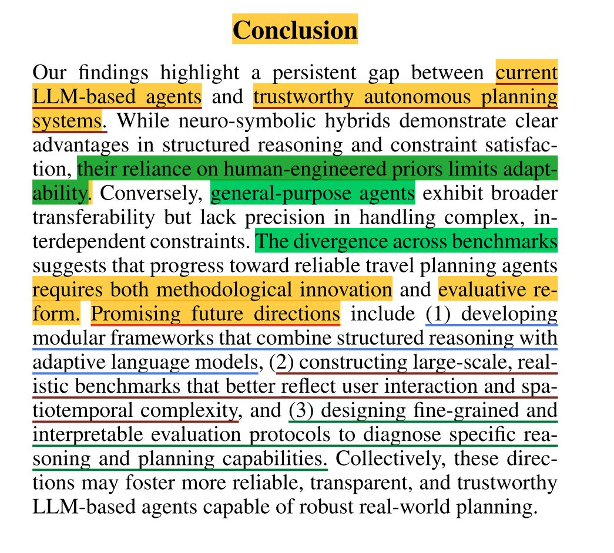
从frameworks(我的理解是那些method)，benchmark，到evaluation protocol(评估方法/关注点等)
三个方面提出了建议
——————————————————————————————————————————
收获：这篇论文一方面让我感受到了综述论文的用处，另一方面对于Agent这个领域也增加了认识，相当于是针对一个特定的任务探讨了从发展到测评到方法，不仅让我对于大模型用于旅行规划这个主题有了一个认识，感觉也让我对于Agent研究/应用领域有了一个较为系统的认知
—————————————————————————————————
在这里记录一下我看的另一篇综述吧（bushi,怎么变成论文记录了）